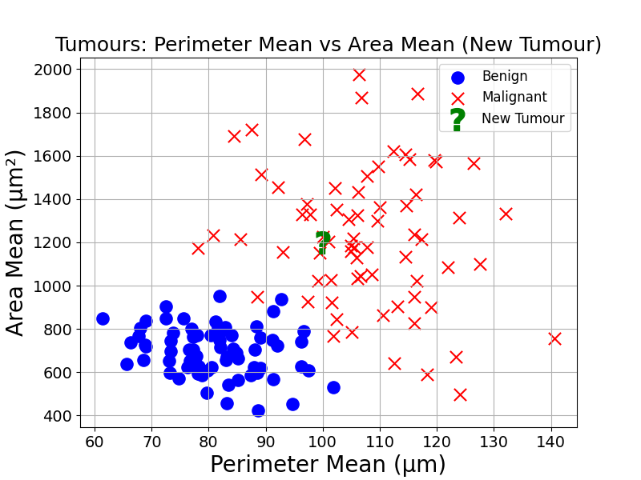
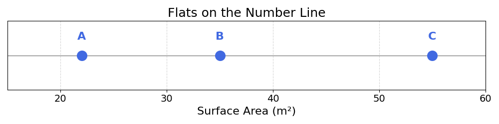
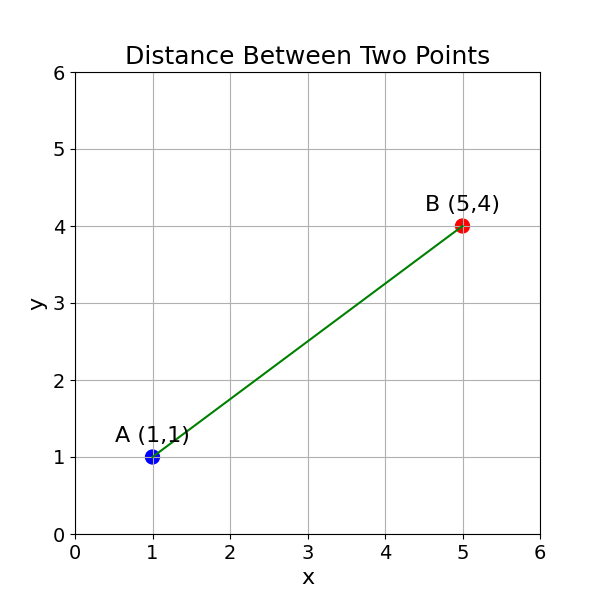

6 Distance and Similarity
Now that points exist in space, we could use the distance between them to make inferences. Inference refers to using information we have, to make guesses about the information we do not have.
As an example, we could infer that similar tumours, or tumours with similar characteristics, have the same diagnosis. But how could we measure the similarity between two observations?
This is where distance comes in.
Looking at the plot below, how would you classify the tumour labelled by a question mark?

Humans looking at this chart would intuitively compare the diagnosis of nearby observations with the unknown observation, and base their guess on neighbours.
This type of inference is something we do every day. As an example, I have seen many rabbits. If I see a small animal with long ears pointing up, I will classify this as a rabbit, as it is similar to my previous observations of rabbits.
6.1 Starting with Subtraction
To understand the concept of distance, we can start with one-dimensional space. This notion may seem strange, as we generally associate space with either two or three dimensions.
Let’s consider a set of three flats in Berlin, labelled A, B and C, with the following surface areas:
| Flat | Surface Area (m²) |
|---|---|
| A | 22 |
| B | 35 |
| C | 55 |
In this example, the surface area represents the single dimension of this space. We can plot the different flats on this dimension:

Figure code
import matplotlib.pyplot as plt
import numpy as np
areas = np.array([22, 35, 55])
labels = np.array(['A', 'B', 'C'])
sort_idx = np.argsort(areas)
areas_sorted = areas[sort_idx]
labels_sorted = labels[sort_idx]
plt.figure(figsize=(10, 2.5))
plt.axhline(0, color='grey', linewidth=1, zorder=1)
plt.scatter(areas_sorted, np.zeros_like(areas_sorted), s=200, color='royalblue', zorder=2)
plt.yticks([])
plt.xlabel('Surface Area (m²)', fontsize=16)
plt.title('Flats on the Number Line', fontsize=18)
plt.grid(True, axis='x', linestyle='--', alpha=0.5)
xtick_vals = np.arange(20, 61, 10)
plt.xticks(xtick_vals, xtick_vals, fontsize=14)
for x, label in zip(areas_sorted, labels_sorted):
plt.annotate(label, (x, 0), xytext=(0, 20), textcoords='offset points',
ha='center', va='bottom', fontsize=16, fontweight='bold', color='royalblue')
plt.xlim(15, 60)
plt.tight_layout()
plt.show()In this space, what is the difference between A and C? How would you compute it?
A simple subtraction would be a good start:
\[ \text{surface}_C - \text{surface}_A = 55 - 22 = 33 \]
Now, calculate the distance between B and C. You should get:
\[ \text{surface}_C - \text{surface}_B = 55 - 35 = 20 \]
In line with our intuition, we see that the distance between B and C is shorter than the distance between A and C. The difference in their surface area is smaller.
Moving forward, we will note the distance between A and C (or any other two points) as \(d(A, C)\).
Can you see an issue with using subtraction as a distance calculation?
One of the main issues is that \(d(A, C) \neq d(C, A)\). From the above, we know \(d(A, C) = 33\). Calculating \(d(C, A)\), we get:
\[ \text{surface}_A - \text{surface}_C = 22 - 55 = -33 \]
This is unfortunate, as the distance between two points should not have a direction. It should be the same regardless of the starting point.
How could we solve this?
6.2 Alternatives to Subtraction
There are two mathematical tricks we could use to tackle this challenge:
- Absolute Value
- Squared Difference
6.2.1 Absolute Value
You can think of the absolute value of a number as removing any negative sign. More rigorously, the absolute value is the magnitude of a number, not its sign. The absolute value of number \(x\) is noted \(|x|\).
For example: \(|2| = |-2| = 2\)
For mathematically-inclined readers (others can close their eyes for two lines), the absolute value function is defined as:
\[ |x| = \begin{cases} x & \text{if } x \geq 0 \\ -x & \text{if } x < 0 \end{cases} \]
Plotting the absolute value of all numbers between \(-5\) and \(5\), we get the following triangular shape:

Figure code
import matplotlib.pyplot as plt
import numpy as np
x = np.linspace(-5, 5, 100)
y = np.abs(x)
plt.figure(figsize=(8, 5))
plt.plot(x, y, color='royalblue', linewidth=3)
plt.title('Absolute Value Function', fontsize=18)
plt.xlabel('x', fontsize=16)
plt.ylabel('|x|', fontsize=16)
plt.xticks(fontsize=14)
plt.yticks(fontsize=14)
plt.grid(True, linestyle='--', alpha=0.5)
plt.tight_layout()
plt.show()One of the main advantages of the absolute value function as a distance metric is the following:
\[ |x-y| = |y-x| \]
The absolute value of the difference between two numbers is the same regardless of their order. Going back to our example:
\[\begin{aligned} |\text{surface}_C - \text{surface}_A| &= |55 - 22| = |33| = 33 \\ |\text{surface}_A - \text{surface}_C| &= |22 - 55| = |-33| = 33 \end{aligned} \]
Exercise 6.1 Compute the absolute value distance between B and C, and between C and B. Show that both are equal to 20.
6.2.2 Squared Difference
Another way to make sure the distance between two points is the same is to square the difference. A number squared, noted \(x^2\), is a number multiplied by itself: \(x \cdot x\)
This operation has the same property as the absolute value:
\[ (x-y)^2 = (y-x)^2 \]
Revisiting the example above:
\[\begin{aligned} (\text{surface}_C - \text{surface}_A)^2 &= (55 - 22)^2 = 33^2 = 1089 \\ (\text{surface}_A - \text{surface}_C)^2 &= (22 - 55)^2 = (-33)^2 = 1089 \end{aligned} \]
Plotting the square of all numbers in the range \(-5\) to \(5\), we notice that it has a parabolic shape:

Figure code
import matplotlib.pyplot as plt
import numpy as np
x = np.linspace(-5, 5, 100)
y = x**2
plt.figure(figsize=(8, 5))
plt.plot(x, y, color='royalblue', linewidth=3)
plt.title('Square Function', fontsize=18)
plt.xlabel('x', fontsize=16)
plt.ylabel('$x^2$', fontsize=16)
plt.xticks(fontsize=14)
plt.yticks(fontsize=14)
plt.grid(True, linestyle='--', alpha=0.5)
plt.tight_layout()
plt.show()This function increases faster as the input number grows.
One potential issue with squared difference is that this number can grow very fast, and is sometimes hard to interpret. Considering the example above, it seems strange that the distance between \(22\) and \(55\) would be \(1089\).
To make squared differences more interpretable, it is common to use the square root of the squared difference. The square root (noted \(\sqrt{\phantom{x}}\)) is the number which, when multiplied by itself, gives the original number. For example, \(\sqrt{9} = 3\) because \(3 \cdot 3 = 9\)
Going back to the example, the square root difference between A and C would be:
\[ \sqrt{(\text{surface}_C - \text{surface}_A)^2} = \sqrt{33^2} = \sqrt{1089} = 33 \]
Exercise 6.2 Compute the squared difference between B and C, and between C and B. Show that both are equal to 400.
6.3 Two Dimensions
The methods above can accurately measure the distance between points in one dimension. But how to measure the distance between points in two dimensions?
What would be the distance between the points A and B shown on the picture below?

Hint: The Pythagorean theorem may be useful.

To find the distance between point A \((1,1)\) and point B \((5,4)\) using the Pythagorean theorem, we can consider these points as two vertices of a right-angled triangle.
The horizontal distance (\(\Delta x\)) between the points is: \[ \Delta x = x_2 - x_1 = 5 - 1 = 4 \] The vertical distance (\(\Delta y\)) between the points is: \[ \Delta y = y_2 - y_1 = 4 - 1 = 3 \] According to the Pythagorean theorem, the square of the hypotenuse (which is the distance \(d\) between points A and B) is equal to the sum of the squares of the other two sides (\(\Delta x\) and \(\Delta y\)): \[ d^2 = (\Delta x)^2 + (\Delta y)^2 \] Substituting the values: \[\begin{aligned} d^2 &= (4)^2 + (3)^2 \\ d^2 &= 16 + 9 \\ d^2 &= 25 \\ \end{aligned} \] To find \(d\), we take the square root of both sides: \[\begin{aligned} d &= \sqrt{25} \\ d &= 5 \end{aligned} \]
So, the distance between point A \((1,1)\) and point B \((5,4)\) is \(5\).
You may notice a striking similarity between the Pythagorean theorem and the square root of the squared distance defined in the previous section.
The distance function derived from the Pythagorean theorem is called the Euclidean distance. Let us compare the Euclidean distance in one and two dimensions:
In one dimension: \[ d(A, B) = \sqrt{(x_2 - x_1)^2} \]
In two dimensions: \[ d(A, B) = \sqrt{(x_2 - x_1)^2 + (y_2 - y_1)^2} \]
Exercise 6.3 Calculate the Euclidean Distance between point A and B defined in this table:
| Point | \(x_1\) | \(x_2\) |
|---|---|---|
| A | 2 | 4 |
| B | 5 | 1 |
Hint: It may be helpful to plot these two points.
6.4 To Infinity and Beyond
As shown in the last chapter, data represents points in space in many dimensions. It is not uncommon to have datasets with hundreds of columns. How to measure distance in such a high-dimensional space?
The Euclidean Distance could be used for two, three or any \(n\) number of dimensions. It can be noted in the following way: \[ d(A, B) = \sqrt{(b_1 - a_1)^2 + (b_2 - a_2)^2 + (b_3 - a_3)^2 + \cdots + (b_n - a_n)^2} \]
Exercise 6.4 Compute the Euclidean Distance between the points A and B in 5 dimensions (you can use a calculator):
| Point | Dimension 1 | Dimension 2 | Dimension 3 | Dimension 4 | Dimension 5 |
|---|---|---|---|---|---|
| A | 2 | 4 | 1 | 3 | 7 |
| B | 5 | 1 | 6 | 2 | 9 |
6.4.1 Scary Sigma
6.4.1.1 Some Context
A more concise notation of the Euclidean distance uses the \(\Sigma\) (pronounced “sigma”) summation operator. This is a scary symbol, though its meaning is relatively simple.

As an example, \(\sum_{i=1}^{n} i\) represents the sum of all integers from \(1\) to \(n\):
\[ \sum_{i=1}^{n} i = 1 + 2 + 3 + \cdots + n \]
In this expression:
- \(i=1\) (at the bottom): Starting value of our counter
- \(n\) (at the top): Ending value of our counter
- \(i\) (after the sigma): The expression to sum for each value of the counter
To make this more concrete, the sum of all integers from 1 to 4 can be written: \[ \sum_{i=1}^{4} i = 1 + 2 + 3 + 4 \]
The following expression is the sum of all integers from 1 to 3, divided by 2:
\[ \sum_{i=1}^{3} \frac{i}{2} = \frac{1}{2} + \frac{2}{2} + \frac{3}{2} \]
Exercise 6.5 Calculate the following summations:
\(\sum_{i=1}^{4} (i+2)\)
\(\sum_{i=1}^{3} \frac{i}{3}\)
\(\sum_{i=1}^{5} \frac{1}{i}\)
The \(\Sigma\) operator is very useful when dealing with collections of numbers and dimensions; something that is very common in Machine Learning.
6.4.1.2 Sigma and the Euclidean Distance
Using the \(\Sigma\) notation, how to represent the Euclidean Distance in a more concise format?
In dot notation for \(n\) dimensions:
\[ d(A, B) = \sqrt{(b_1 - a_1)^2 + (b_2 - a_2)^2 + \cdots + (b_n - a_n)^2} \]
In sigma notation, with \(n\) the number of dimensions:
\[ d(A, B) = \sqrt{\sum_{i=1}^{n} (b_i - a_i)^2} \]
6.5 Final Thoughts
That is it! Using the above formula, you can compute the distance between any two points in a space of \(n\) dimensions. This will be very useful when building the first prediction model of this book, K-Nearest Neighbours.
6.6 Solutions
Solution 6.1. Exercise 6.1
\[\begin{aligned} |\text{surface}_C - \text{surface}_B| &= |55 - 35| = |20| = 20 \\ |\text{surface}_B - \text{surface}_C| &= |35 - 55| = |-20| = 20 \end{aligned} \]
Solution 6.2. Exercise 6.2 \[\begin{aligned} (\text{surface}_C - \text{surface}_B)^2 &= (55 - 35)^2 = 20^2 = 400 \\ (\text{surface}_B - \text{surface}_C)^2 &= (35 - 55)^2 = (-20)^2 = 400 \end{aligned} \]
Solution 6.3. Exercise 6.4 First, compute the squared difference for each of the five dimensions:
\[\begin{aligned} (5-2)^2 &= 9 \\ (1-4)^2 &= 9 \\ (6-1)^2 &= 25 \\ (2-3)^2 &= 1 \\ (9-7)^2 &= 4 \\ \end{aligned} \]
Sum:
\[ 9 + 9 + 25 + 1 + 4 = 48 \]
Take the square root:
\[ d(A, B) = \sqrt{48} \approx 6.93 \]
Solution 6.4. Exercise 6.5
\(\sum_{i=1}^{4} (i+2) = (1+2) + (2+2) + (3+2) + (4+2) = 3 + 4 + 5 + 6 = 18\)
\(\sum_{i=1}^{3} \frac{i}{3} = \frac{1}{3} + \frac{2}{3} + \frac{3}{3} = 2\)
\(\sum_{i=1}^{5} \frac{1}{i} = 1 + \frac{1}{2} + \frac{1}{3} + \frac{1}{4} + \frac{1}{5} \approx 1 + 0.5 + 0.333 + 0.25 + 0.2 = 2.283\)